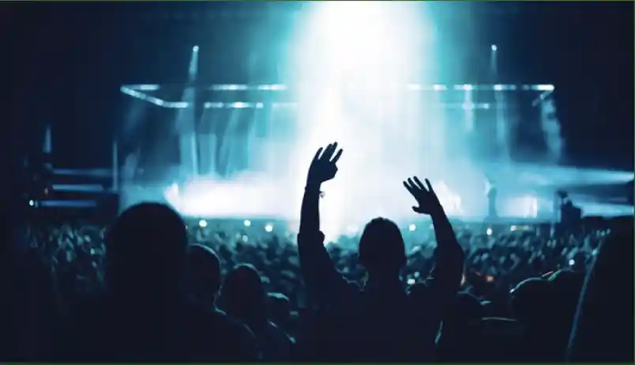
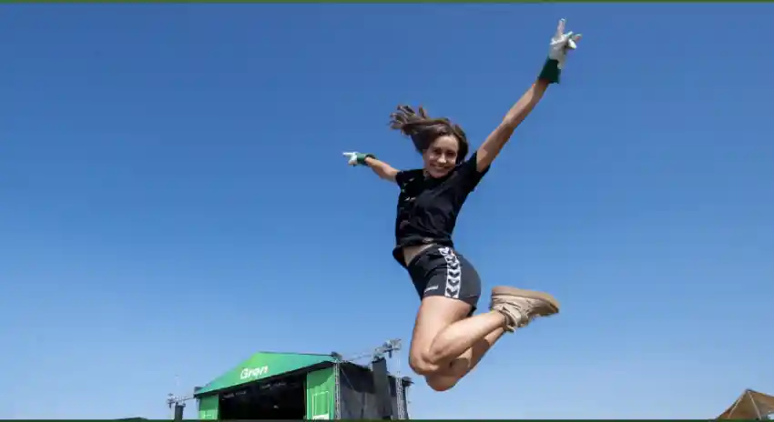
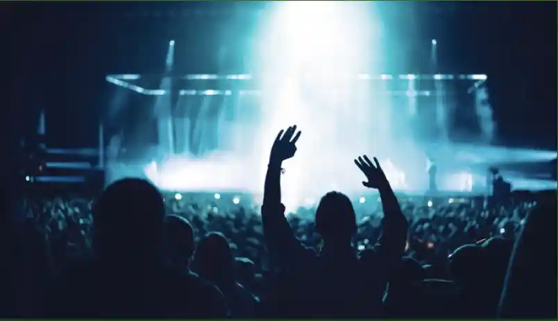
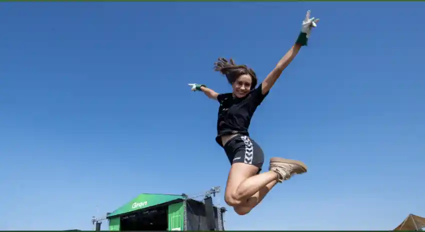

Frivillig på Radar: Fordele som Grøn Koncert og NorthSide
Når du er frivillig på Radar, åbner der sig en verden af muligheder. Udover at være en del af et stærkt fællesskab og bidrage til byens kulturliv, får du adgang til eksklusive fordele. Radar har samarbejder, der giver dig mulighed for at arbejde som frivillig ved større arrangementer som Grøn Koncert og NorthSide.
Her får du ikke kun en unik oplevelse som en del af teamet bag kulisserne. Du får også gratis adgang til arrangementerne. Forestil dig at være en del af maskineriet ved nogle af Danmarks største musikbegivenheder, alt imens du nyder festivalstemningen og koncerterne helt tæt på.
Det er en win-win: Du får fede oplevelser, udvider dit netværk og støtter kulturlivet, alt sammen som en del af Radar-familien.
Klar til at opleve musikken fra en helt ny vinkel? Bliv frivillig i dag!
 



Bliv Frivillig på Radar – En Del af Aarhus’ Kulturscene
Som frivillig på Radar bliver du en del af hjertet i Aarhus’ musik- og kulturliv. Du hjælper med alt fra publikumsmodtagelse og bararbejde til sceneteknik, mens du kommer helt tæt på musikken.
Det er en unik mulighed for at få erfaring, møde andre kulturinteresserede og blive en del af et passioneret fællesskab.
Bliv en del af noget større – bliv frivillig på Radar!